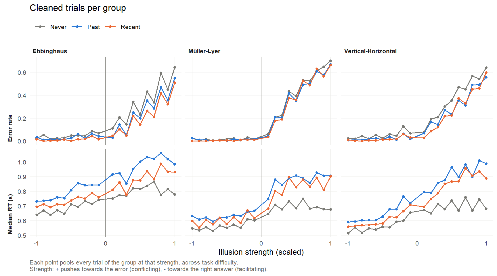

From the de-identified open data in data/open/ (codebook: data/open/README.md; built from the raw jsPsych files by analysis/0_deidentify.R, which only the holder of the raw files runs) to the derived files every analysis starts from. They are written to data/, which is gitignored:
file
content
data/groups.csv
who is in the illusion analysis and in which group (Never / Past / Recent), with the screening answers that decided it
data/questionnaires.csv
AAQ-II, DASS-21 and MEQ-30 scores, for every session with items
data/data_illusiongame.csv
the Illusion Game test trials of everyone in groups.csv, cleaned and scaled: the input of the model in analysis/server/models.R
Render from the repo root (about 15 seconds):
quarto render analysis/0_preprocessing.qmd
The group rules are the manuscript’s (Participants section) and reproduce its 43 / 39 / 35 exactly. The control who stated an age of 16 is out, as in the manuscript (decided 2026-11-21, on Marco Sperduti’s review; from 2026-11-02 until then that session was kept as a probable typing error, with age missing, which made Never 44). The trial cleaning follows IllusionGameComputational, the source of the model’s priors, rather than the manuscript. Each section ends with a check that stops the render if a count changes.
The open data hold every session of the study’s four arms, whatever its later inclusion. The arm is the experiment’s group URL parameter: control and control_T0_bis are psychedelic-naïve controls, psychedelic_society (French) and psychedelics_soc_english are users recruited through psychedelic societies. The longitudinal arm (control_T0, ketamine_*, *_T1) is not in the open data.
Code
knitr::kable(addmargins(table(Arm = participants$Arm, Language = participants$Session_Language)))
English
French
Sum
control
0
31
31
control_T0_bis
16
0
16
psychedelic_society
0
68
68
psychedelics_soc_english
12
0
12
Sum
28
99
127
125 of 127 sessions completed both tasks; 2 have the full Illusion Game but no self-association task.
Groups
Each arm ran its own screening (experiment/demographics.js). The rules:
Eligible: completed both tasks, and tested by April 2026, the data freeze. The manuscript’s last session is 2026-04-02; the open data keep the month only, and no session falls between that day and May. Three users were tested later (May and September 2026); set freeze <- NA to include them.
Adult: did not state an age under 18. The only such answer is a control who typed 16 (under_18 below): a student whose highest education is high school, so the age may be real, and the study was open to adults only. The open data record that age as missing, because 0_deidentify.R blanks it (and stops on any other age under 18), so the session is named here by its ID.
Never: control arm, answering No to “Have you ever taken a classical psychedelic in your life?”.
Recent: psychedelic-society arm whose last classic psychedelic was 30 days ago or less. Days come from the free-text “how many days since your last classic psychedelic?” (“18 jours”, “3 semaines”, “Environ 12 mois”); where it cannot be read, from the yes/no “in the last month?” just before it. The days rather than the yes/no answer is what reproduces the manuscript: they disagree for 7 of 80 users (e.g. “Yes” with 45 or 60 days), and the yes/no answer alone gives 43 / 32 instead of 39 / 35.
Past: the same arm, more than 30 days.
Out: controls reporting use, and users reporting experience only with non-classic substances, i.e. a lifetime frequency of “Never” and a non-classic (“Other”) last substance. Either alone is not enough: S115 says “Never” but took ayahuasca, S060 took “Other” last but classics 11-50 times, and the manuscript kept both.
Code
freeze <-"2026-04"# last month included (YYYY-MM)under_18 <-"S016"# stated age 16; the open data hold it as missingcontrol_arms <-c("control", "control_T0_bis")user_arms <-c("psychedelic_society", "psychedelics_soc_english")# "14", "18 jours", "3 semaines", "Environ 12 mois", "4 months ago", "5 ans"parse_days <-function(x) { s <-tolower(trimws(x)) m <-regmatches(s, regexec("^(?:environ |about )?([0-9]+(?:[.,][0-9]+)?) *(.*)$", s, perl =TRUE))vapply(m, function(h) {if (length(h) !=3) return(NA_real_) n <-as.numeric(sub(",", ".", h[2])) unit <- h[3]if (unit ==""||grepl("^(jour|day|à peu|a peu)", unit)) return(n)if (grepl("^(semaine|week)", unit)) return(7* n)if (grepl("^(mois|month)", unit)) return(30* n)if (grepl("^(an|year)", unit)) return(365* n)NA_real_ }, numeric(1))}df <- participantsdf$Days <-parse_days(df$Psychedelics_DaysAgo)recent <-ifelse(!is.na(df$Days), df$Days <=30, df$Psychedelics_LastMonth %in%"Yes")only_non_classic <- df$Psychedelics_Frequency %in%"Never"& df$Experience_Substance %in%"Other"df$Group <-ifelse( df$Arm %in% control_arms,ifelse(df$Psychedelics_Ever %in%"No", "Never", "out: control reporting use"),ifelse(df$Arm %in% user_arms,ifelse(only_non_classic, "out: non-classic substances only",ifelse(recent, "Recent", "Past")),"out: not in this study's arms"))df$Group[!(df$Completed_IG & df$Completed_SAT)] <-"out: protocol not completed"df$Group[!is.na(freeze) & df$Session_Month > freeze] <-"out: after the data freeze"# The one session with a stated age under 18: a control, with age missing.stopifnot(df$Arm[df$Participant %in% under_18] %in% control_arms, is.na(df$Age[df$Participant %in% under_18]),sum(df$Participant %in% under_18) ==length(under_18))df$Group[df$Participant %in% under_18] <-"out: stated age under 18"excluded <-startsWith(df$Group, "out")included <- df[!excluded, ]included$Group <-factor(included$Group, levels =c("Never", "Past", "Recent"))groups <- df[!excluded, c("Participant", "Group", "Arm", "Session_Month", "Psychedelics_Ever","Psychedelics_LastMonth", "Psychedelics_DaysAgo", "Days","Psychedelics_Frequency", "Experience_Substance")]write.csv(groups[order(groups$Group, groups$Participant), ], data_path("groups.csv"), row.names =FALSE)
Where the yes/no answer and the days disagree, the days win:
The groups differ in more than psychedelic use: the controls are younger, mostly students, and less than half are native speakers of the session’s language. These are reported in the paper, not adjusted for (see AGENTS.md, “Age and the other group differences”).
Items are stored as jsPsych’s 0-based index of the chosen label (experiment/questionnaires.js has the labels and wording). None of the three instruments has a reverse-keyed item, and in every one the first label is the lowest anchor, so a higher index is more of what the scale measures. The scoring follows the manuscript:
AAQ-II (7 items, “never true” to “always true”): the sum, with the items on the published 1-7 scale (the stored 0-6 plus one), so the range is 7-49 and the published cut-offs apply. Higher is less psychological flexibility.
DASS-21 (21 items, 0 “did not apply to me at all” to 3 “applied to me very much”): the mean of the 7 items of each subscale (Depression, Anxiety, Stress), on 0-3, and the total as the mean of the three. (The conventional severity scores are the subscale sums doubled, i.e. 14 times these means.)
MEQ-30 (30 items, 0 “none, not at all” to 5 “extreme”; users only, about their last classic psychedelic experience): the mean of the items of each of the four Barrett et al. (2015) factors (Mystical, 15 items; Positive mood, 6; Transcendence of time and space, 6; Ineffability, 3), and the total as the mean of all 30. MEQ_Complete flags a “complete mystical experience”: at least 60% of the maximum (a mean of 3) on all four factors.
Missing items. A scale is scored when at most one of its items is missing, as the mean of the answered items (times the number of items for the AAQ-II sum); with more missing it is NA. A total is NA when any of its parts is. *_Missing counts the missing items per instrument.
One row per test trial (practice excluded), for every participant in groups.csv, with the predictors the model uses. RT goes from ms to seconds, which cogmod requires.
Cleaning follows IllusionGameComputational (0_preprocessing.qmd there), the source of the priors, rather than the manuscript: the model’s outlier component takes the stray fast and slow responses, so only the impossible ones go.
RT <= 0 or RT >= 6 s.
A participant x illusion x block whose errors on facilitating trials reach 1/3. There the illusion points to the right answer, so an engaged participant is near-perfect however sensitive to the illusion they are, and guessing or reversed instructions show up as 1/2 or ~1 errors.
Predictors, both on [-1, 1], scaled by the task’s stimulus grid (the same for every participant), not by the data, so that a subset cannot change the units:
Illusion_Strength, signed: + conflicting (pushes towards the error), - facilitating; +-1 is the strongest illusion shown. 0 (no illusion) is between the grid’s +-0.1. As in every Illusion Game file, the sign of the strength alone says which way the illusion pushes, whatever the side of the difference: errors by sign in the controls are 1-6% when negative, 34-45% when positive. There is no strength-0 trial.
Task_Difficulty, from |difference|: +1 the smallest difference shown (hardest), -1 the largest (easiest).
This is IllusionGameComputational’s transformation (Illusion_StrengthZ, Illusion_DifferenceZ) over this task’s narrower grid, with the difference flipped so that the name reads the right way round. The units are therefore not the same as there.
What the cleaned trials look like, before any model: the error rate and the median RT at each strength of the grid, per group and illusion.
Code
cells <-aggregate(cbind(Error = trials$Error, RT = trials$RT),by = trials[c("Group", "Illusion_Type", "Illusion_Strength")],FUN =function(x) c(mean =mean(x), median =median(x)))raw <-rbind(data.frame(cells[1:3], Measure ="Error rate", Value = cells$Error[, "mean"]),data.frame(cells[1:3], Measure ="Median RT (s)", Value = cells$RT[, "median"]))raw$Group <-factor(raw$Group, levels =names(group_col))raw$Illusion_Type <-factor(illusions[raw$Illusion_Type], levels = illusions)ggplot(raw, aes(Illusion_Strength, Value, colour = Group)) +geom_vline(xintercept =0, colour ="#9a9a95", linewidth =0.4) +geom_line(linewidth =0.7) +geom_point(size =1.2) +facet_grid(Measure ~ Illusion_Type, scales ="free_y", switch ="y") +scale_colour_manual(values = group_col) +scale_x_continuous(breaks =c(-1, 0, 1)) +labs(x ="Illusion strength (scaled)", y =NULL, colour =NULL,title ="Cleaned trials per group",caption ="Each point pools every trial of the group at that strength, across task difficulty.\nStrength: + pushes towards the error (conflicting), - towards the right answer (facilitating).") + theme_igsa +theme(strip.placement ="outside")

Self-association trials
Not built yet. data/open/selfassociation.csv holds every trial of the 125 sessions that reached the task; the cleaning rules of the self-association paper are still to be decided, and the section that writes data/data_selfassociation.csv belongs here once they are.